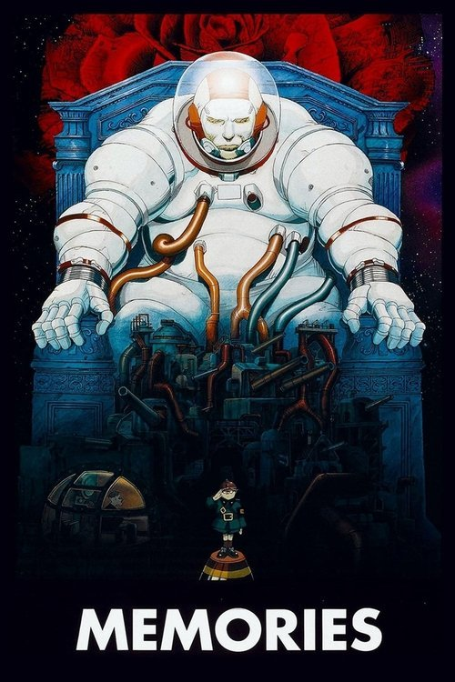

Memories (1995)
Sinopsis Rápida
Tres historias, tres mundos, un viaje alucinante a través de la mente humana. ¿Te atreves a sumergirte en las perturbadoras visiones de Memories?
Sinopsis Detallada
Memories es una antología de animación japonesa compuesta por tres segmentos radicalmente diferentes, dirigidos por maestros del anime. Desde un encuentro extraterrestre surrealista en 'Rosa Magnética', hasta la frenética huida de un arma biológica en 'Bomba Fétida', y el implacable ciclo de violencia en 'Carne de Cañón', la película te dejará sin aliento. Cada historia es un viaje visualmente impresionante y narrativamente potente, explorando temas de memoria, guerra y la fragilidad de la humanidad. La obra maestra de Katsuhiro Otomo te atrapará con su estilo único y su profunda reflexión sobre la condición humana.
¿Por qué tenés que verla?
{{PUNTOS_CLAVE}}Idea Extra
Análisis comparativo de los estilos de dirección de cada segmento de Memories, destacando las diferencias y similitudes entre los directores.
{{CONTENIDO_RELACIONADO}}